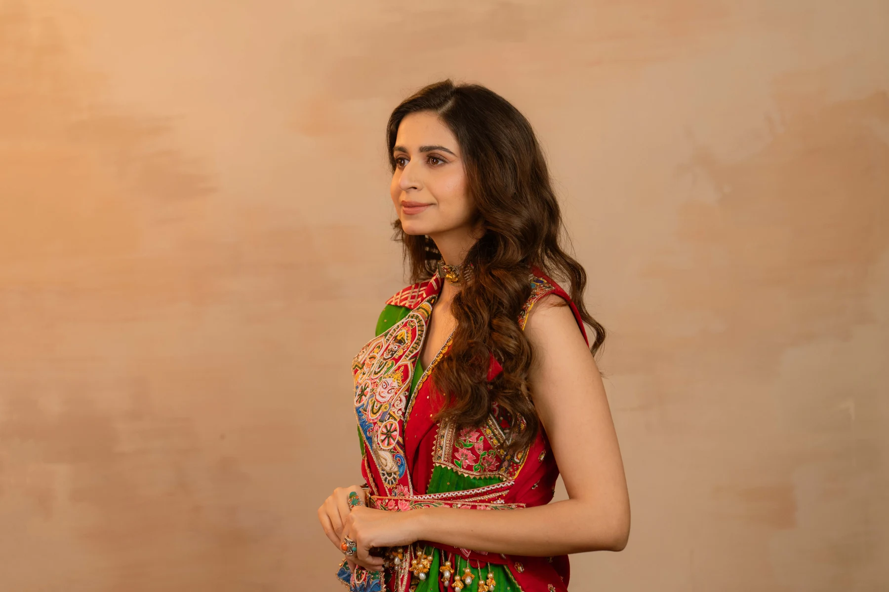
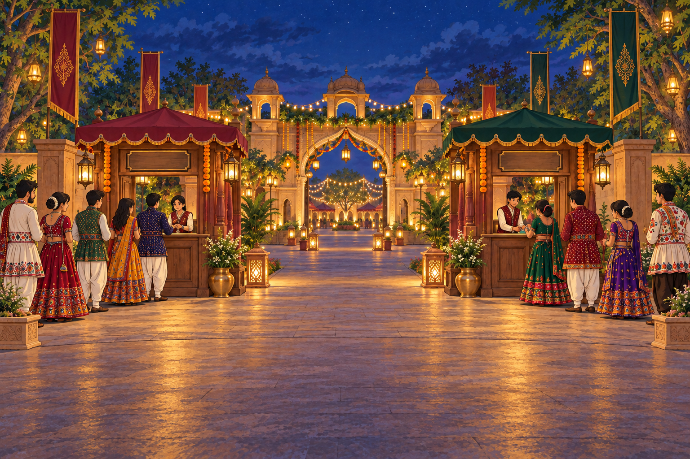
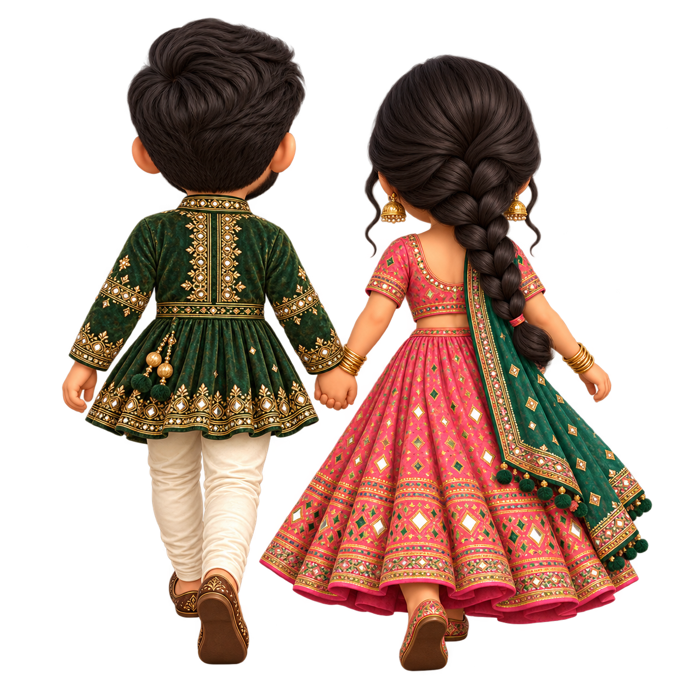
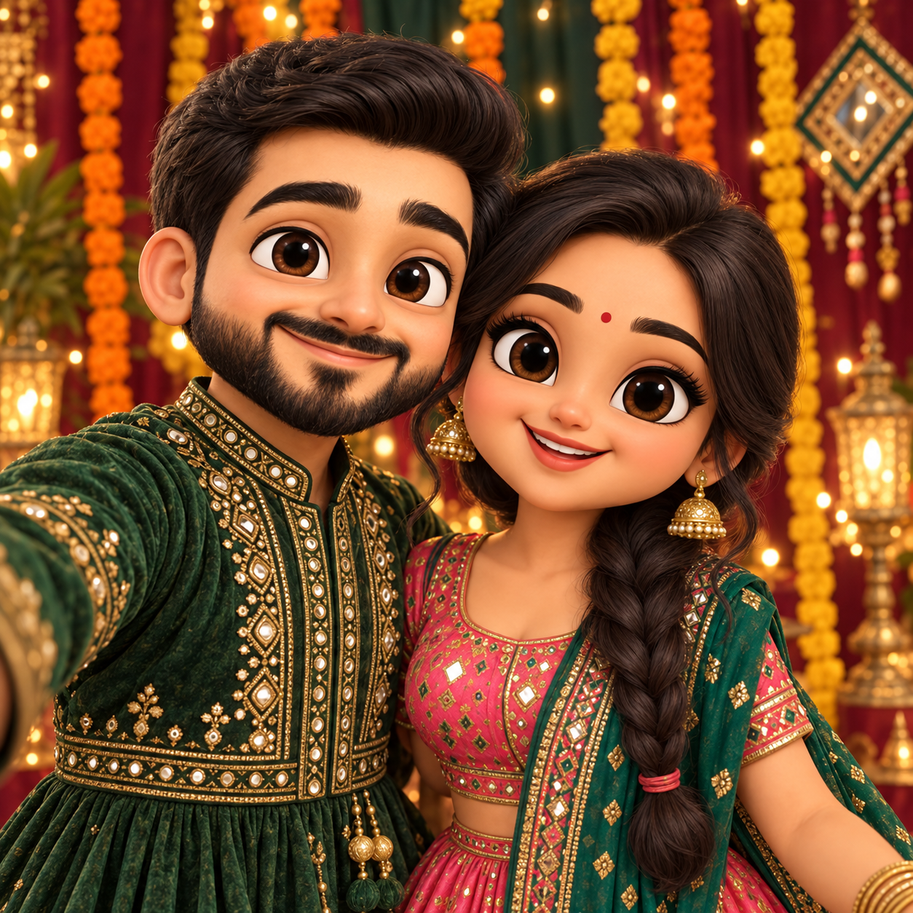
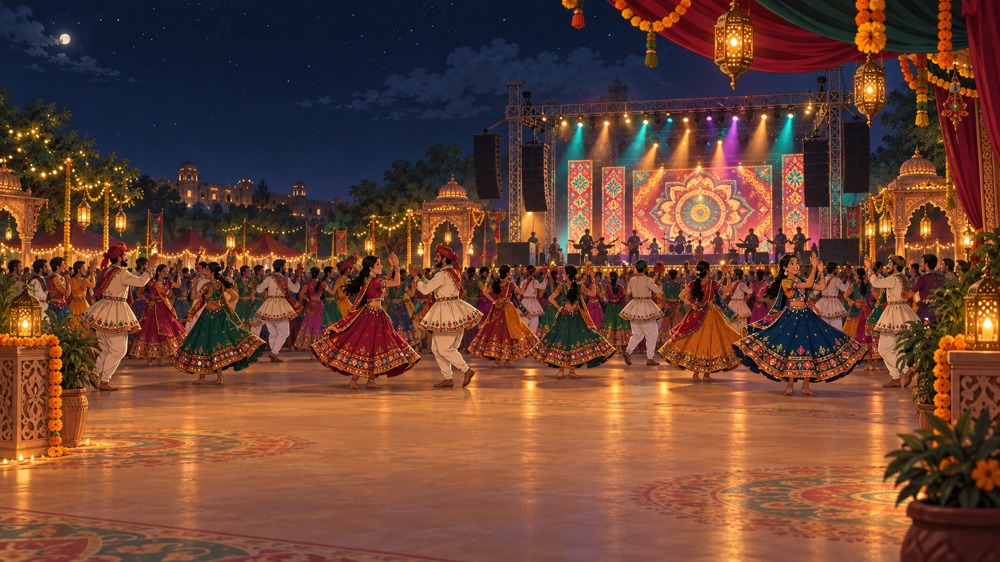
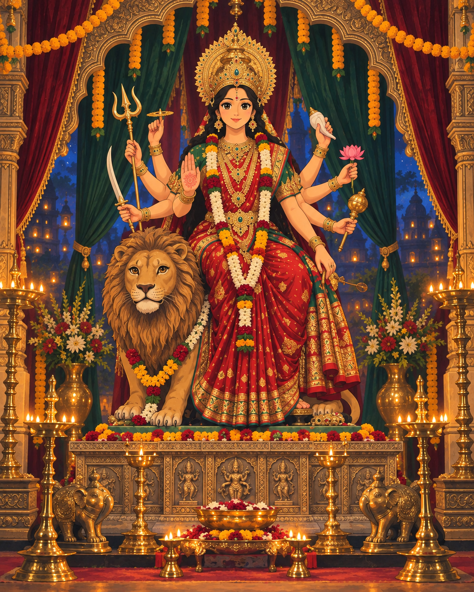
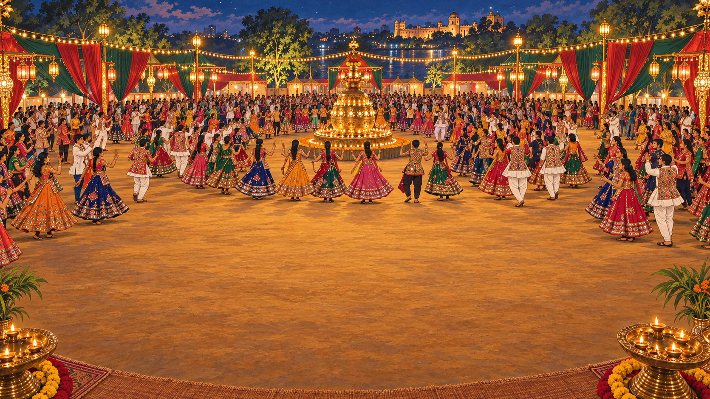

01 · A night worth finding
An amazing night
starts with a friend.
He’s searching for an unforgettable Garba night. She has just the invitation.

He wants more than a night out. He wants a night to remember.
SCROLL TO HEAR HER SUGGESTION ↓02 · An invitation for you
She brings the invitation.
He opens the evening.
“Come with me. This is going to be a night to remember.”
ExperienceAN EVENING TO REMEMBER
She has something special for him.
OPEN THE INVITATION TO EXPLORE ↓An invitation to celebrate
Some nights stay
with you forever.
Live with Kinjal Dave
9 October 2026 · 7:30 pm onwards
Ahmedabad
03 · The plan
Tonight, they follow
the feeling.
The plan is made. He’s in his kediyu; she’s in her chaniya choli. Their ride is on its way.
Their plan is made. Now for the ride.
SCROLL TO FOLLOW THEIR EVENING ↓
04 · We’re here
The evening
begins here.
Online passes ready, they arrive together at The Garba Experience.

“Our online passes are ready. Let’s head inside!”
Scroll to follow their arrival ↓
05 · A little picture. A big memory.
Before the first dance,
one for the memories.
A glowing selfie booth catches her eye. One photo together, before the night sweeps them away.
THE GARBA EXPERIENCE
Our night
to remember
A small stop. Their first memory of the evening.

A memory made. The music is calling. ↓

06 · The arrival
The lights. The rhythm.
What a night awaits.
A modern stage. A beautifully Gujarati soul. They walk into a celebration already alive with Garba.
Play the music, then scroll closer to the stage.
With every step, the rhythm draws them closer.

07 · A moment of devotion
First, a prayer.
Jai Mataji.
Inside, they pause together before Durga Mata. Before the first step, a moment of gratitude.
Official aarti · T-Series Gujarati.
A quiet heart. A glowing diya. The evening begins.

08 · The circle welcomes them
One step closer.
One of us.
The circle opens for both friends. They find the beat, join the dancers, and let the evening take over.
Kinjal Dave · Official YouTube releases. Sound starts only when you choose.
They came for the music. Together, they found their circle.
09 · Your evening begins here
You are
warmly invited.
માતાજીની આરાધના એ સંસ્કૃતિ આપણી,
મન મૂકી ગરબે ઘૂમવું એ લાગણી આપણી.
FEATURING Kinjal Dave
Friday, 9 October
2026
7:30 pm
onwards
Vivenza by Gopi Farm
S.P. Ring Road, AhmedabadBookings through District
Invitation guests: please carry your accompanying elephant-shaped entry pass.
For District bookings, follow the entry instructions on your ticket.